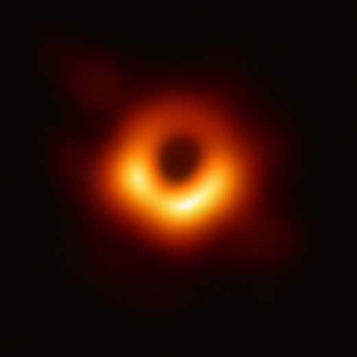

Black Holes Grow As Universe Expands
Hypothesis
A new hypothesis suggests the universe's expansion could be causing all material objects to grow in mass.
The universe's black holes are bigger than astrophysicists expected them to be. Now, a new study suggests why: Every single black hole may be growing as the universe expands.
The new hypothesis, called "cosmological coupling," argues that as the universe expands outward after the Big Bang, all objects with mass grow with it too. And black holes, as some of the most massive objects to exist, grow the most.
This hypothesis stems from the gravitational ripples in space-time that occur when two massive black holes get locked in orbit, spiral inward and collide. Since 2015, scientists at the Laser Interferometer Gravitational-Wave Observatory (LIGO) and Virgo interferometer, which are designed to detect these gravitational waves, have observed many of these black hole mergers.
 Source: WikepediaBut the waves contain a mystery. Based on the estimated size distribution of stars in the universe, black holes should have masses less than roughly 40 times the mass of the sun. But data taken from these gravitational waves show that many black holes are more than 50 solar masses, and some approach 100 solar masses.